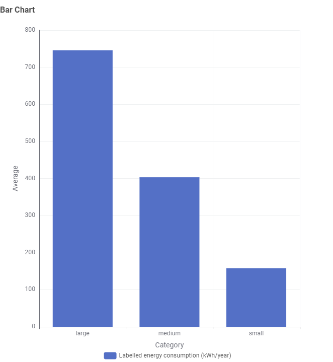
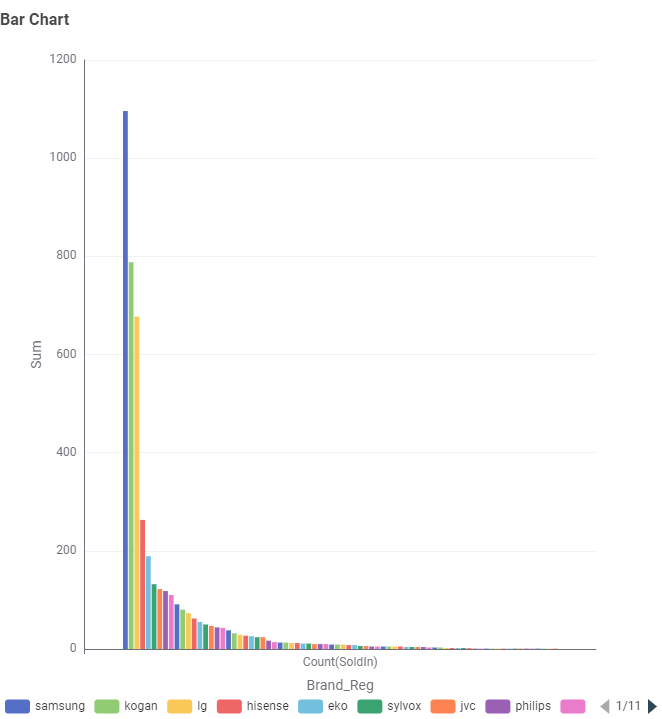

Based on our research, energy consumption from televisions vary based on many aspects, including TV size, brand and screen tech used.
Below features our findings based on the different TV sizes and the energy consumption that has been spent yearly.

Figure 1: Average Energy Consumption Based on Screen Size
Based on this, most of our customers in Australia prefer to buy Samsung brand televisions due to their great performance.

Figure 2: Australia Sales 2026
Regardless, our staff recommends that before buying any televisions from our stores, we remind you to check all the features of our televisions such as screen size, energy consumption usage and star rating before making purchases from our stores so that you don't regret your purchase.